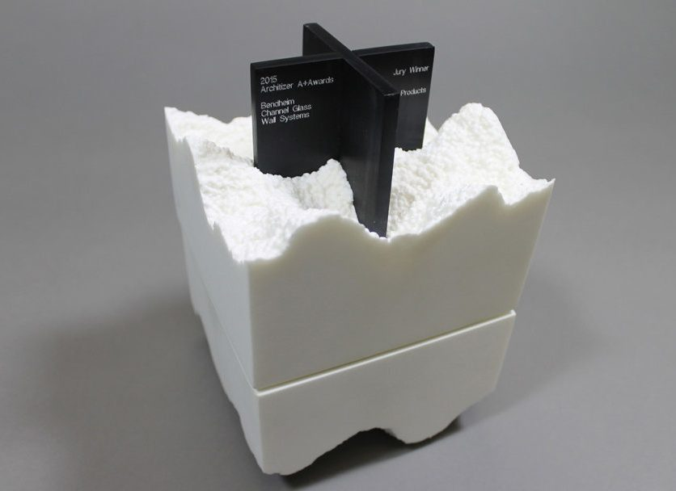
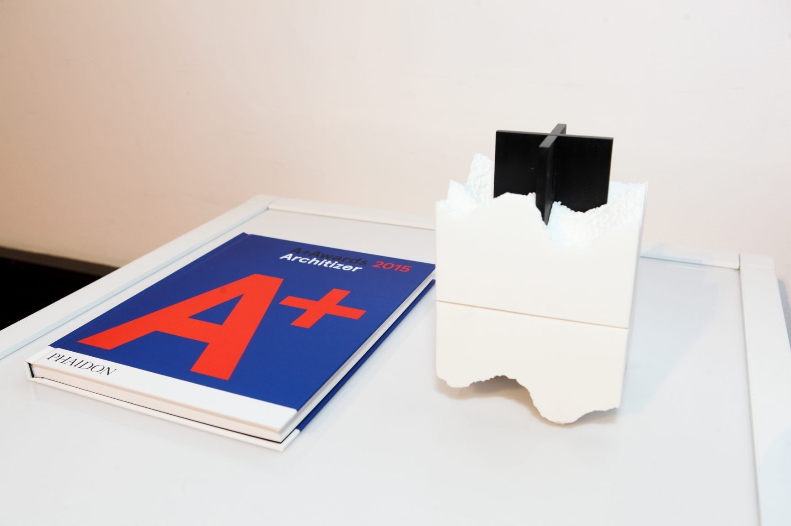
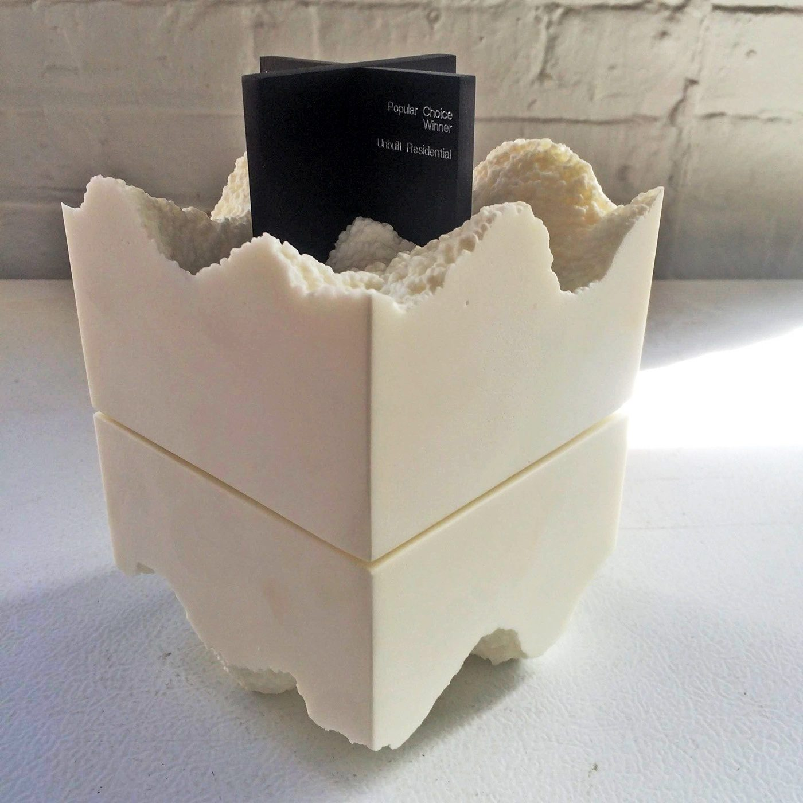
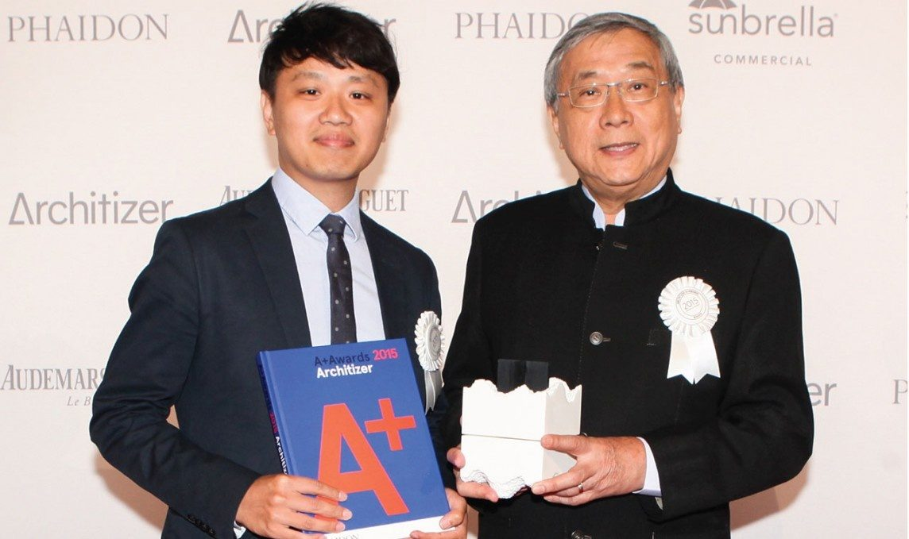
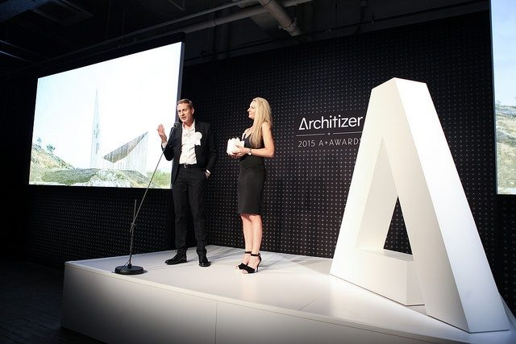
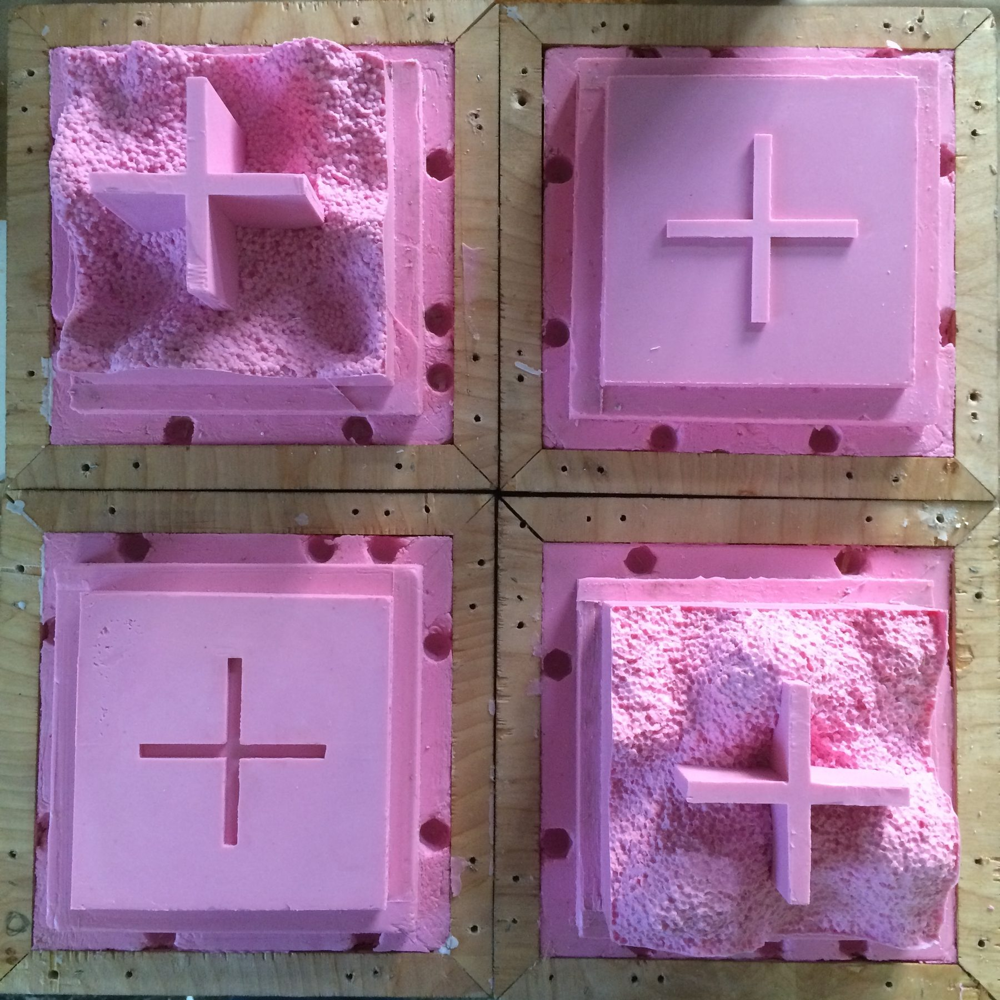
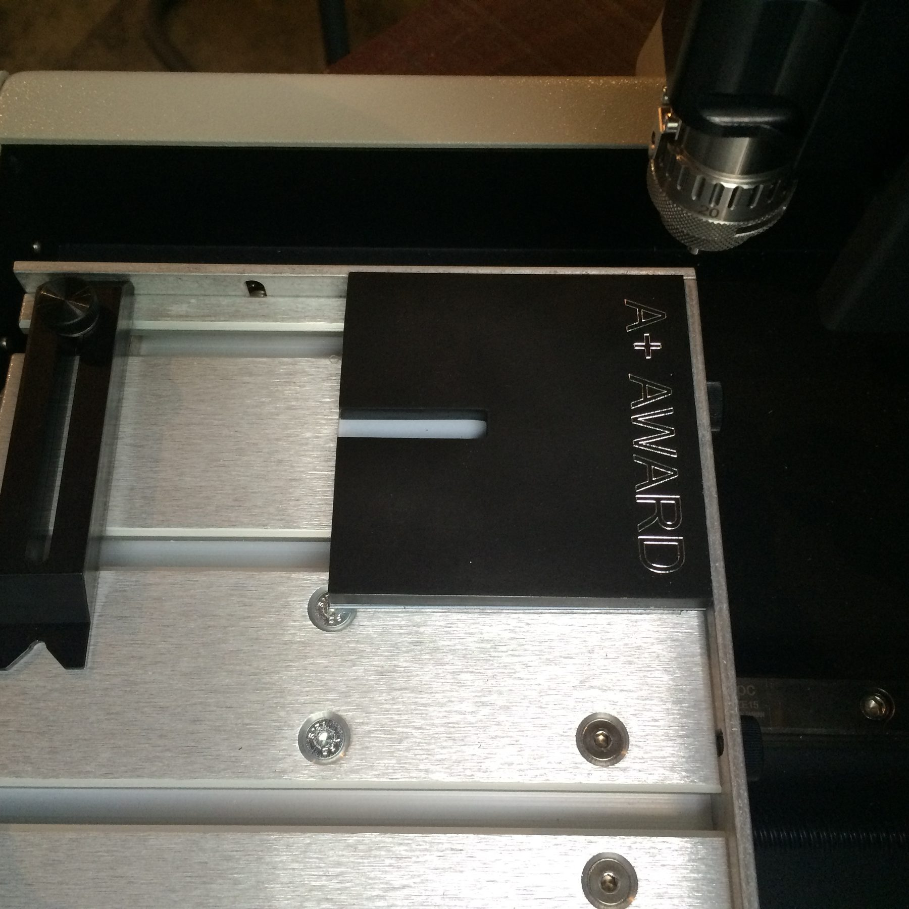
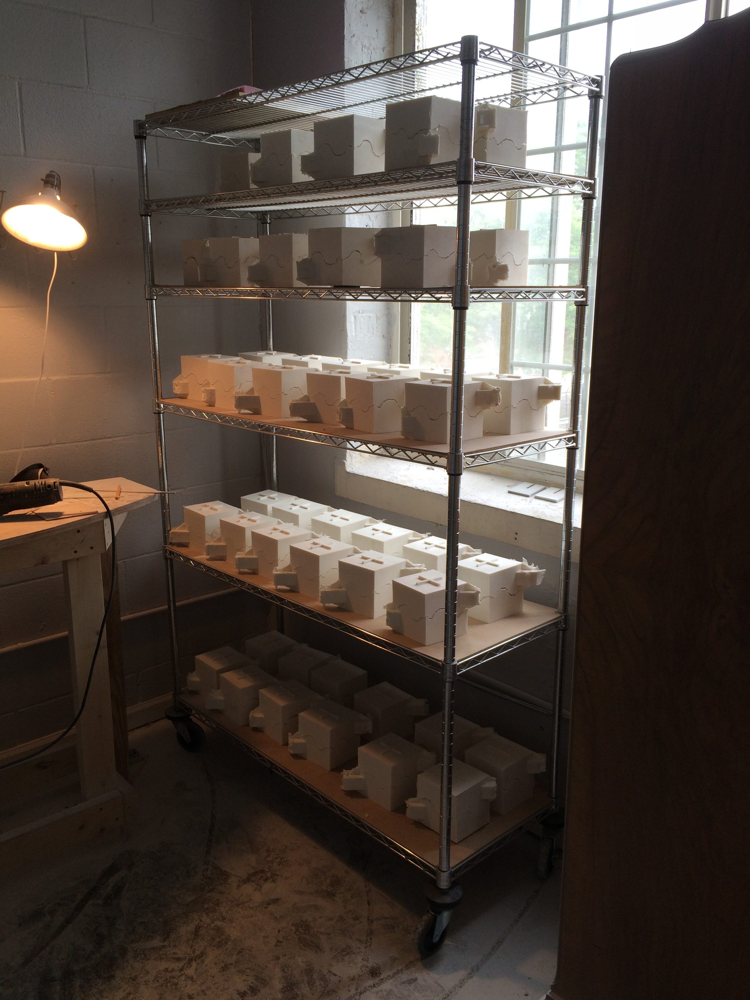
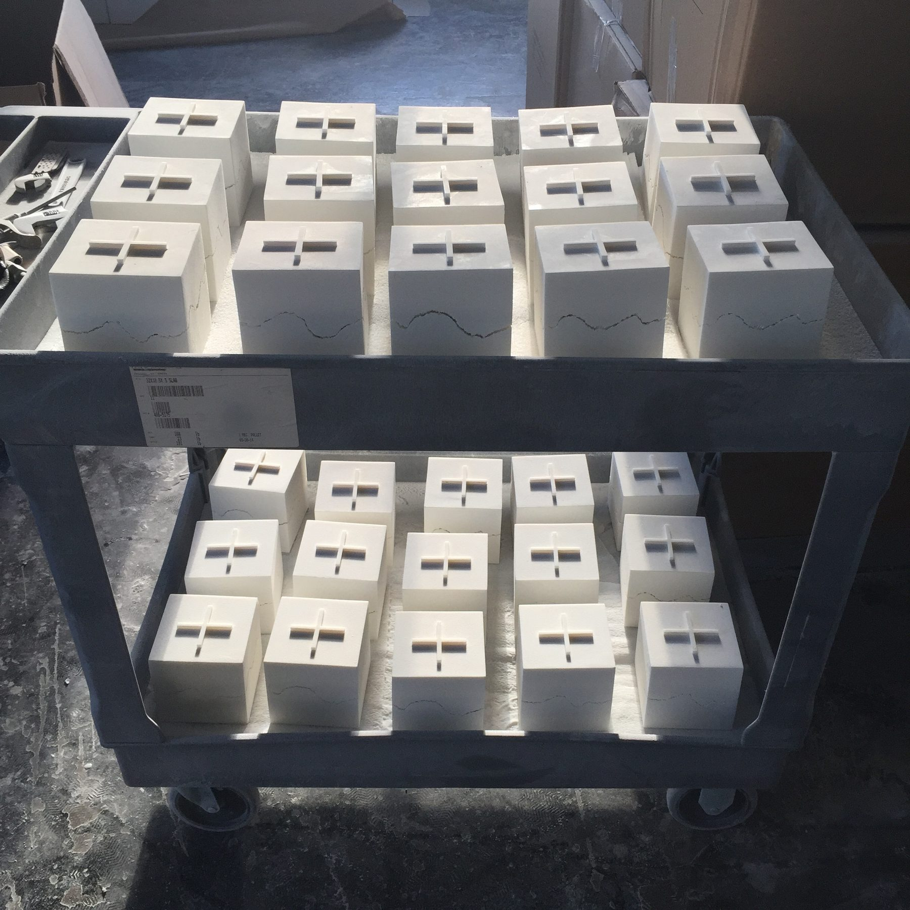

Objects / 2015 / Chicago, IL
Architizer A+ Award
Award objects with Snarkitecture

Award objects for the best architecture built that year, sculpted with Snarkitecture and produced, precisely, hundreds of times.
The work
Architizer's A+ Awards name the best architecture built that year, worldwide. Snarkitecture designed the trophy as a cast block with a torn upper edge and a cross shaped plaque set into the top. An object that stands for the best work in architecture has to survive the comparison, and every winner takes one home, so each piece ends up in the house of someone who spends their working life judging how things are made. That is a humbling audience, and it set the standard.
The material question
The torn edge carries the whole idea, and a torn edge is a sculptor's problem, not a machinist's. It had to look broken and feel deliberate. It also had to be the same break, in the same place, on every piece, because a fracture that varies reads as a defect rather than a decision. Cultured marble was the material that could hold a fracture that sharp and still cure to a consistent color.
The making
We worked the master until the break read right from every angle, then built the tooling around protecting exactly that: silicone molds that would survive a long production run without softening the edge, a mix that filled the fracture cleanly, and anodized aluminum plaques set flush into the top.
Doing it hundreds of times
Then the daunting part. Precision once is craft; precision hundreds of times is process. Packing and labelling for awards shipping to winners worldwide, so the last one out the door arrived as sharp as the first.
Details
- Year
2015 - Location
Chicago, IL - Category
Objects - Materials
Cultured marble, anodized aluminum
Credits
- Design: Snarkitecture
- Produced for Architizer
- Development and production: Ben Stagl
Studio
- ChiLab Studio
- Chicago, Illinois
- Established 2013








Bring us a drawing,
a model, or a hunch.
The studio
Specialty material projects for architecture, interior design, public art, and the fine arts.
ChiLab Studio, Chicago, Illinois. Established 2013.
What we do
- Metal casting
- Glass
- Finishes
- Digital fabrication
- Metal fabrication
- Restoration
- Project management
Contact
info@chilabstudio.com
chilabstudio.com
Instagram @chilabstudio